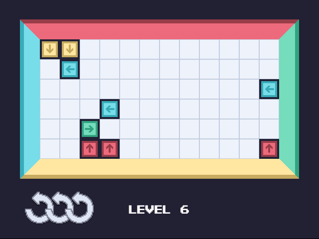
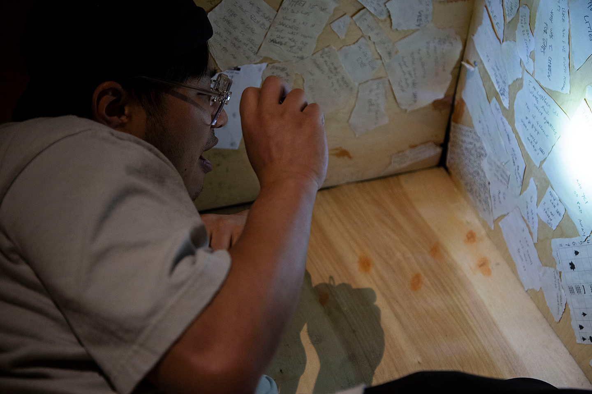
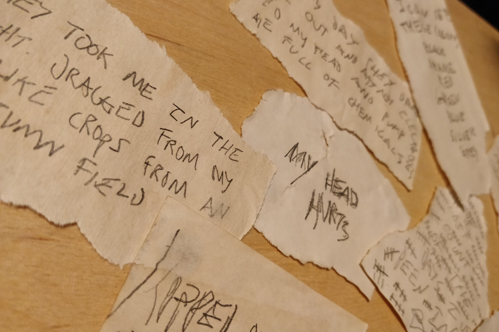
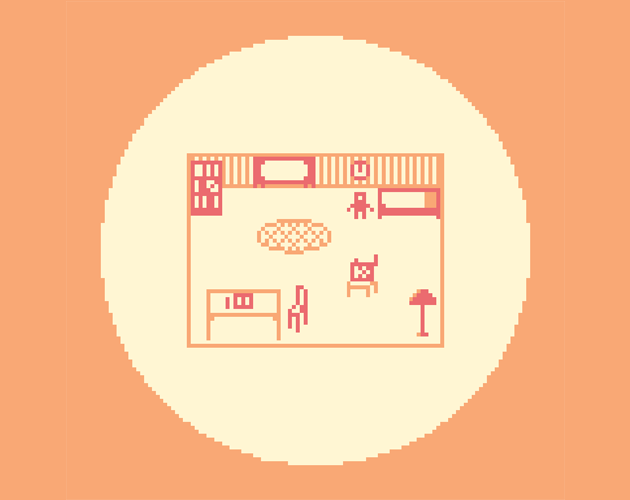

Boxes is a deceptively simple minimalist puzzle game about rearranging boxes.

I make games that use play to educate and inform, that tell stories in new and dynamic ways, and that push the boundaries of the medium. I have experience making games using Unity, HTML/CSS and Javascript, C++, and in the physical space as well. I am adept at generating innovative ideas, prototyping features and mechanics, and documenting design processes as part of a larger team.
You can find a selection of my games below, along with visual and written documentation, and playable builds where possible.
Email: george.larkwright@gmail.comChapter 1 is an educational dungeon crawler designed to encourage young people to write their own stories, tackling 'blank page anxiety' and other barriers preventing young people from engaging with creative writing in the classroom.
Players journey to the depths of a jungle in search of adventure, encountering different objects and obstacles on their travels. Players are required to write out their own solutions to these challenges in order to progress. The game uses natural language processing to generate new writing prompts based on what the player has already written, so players build their own story as they play.
Modern pedagogical theory and research was central to the design and development of this game, with the final goal being a game that is both fun to play and delivers an impactful learning experience.

Before beginning development of the game I ran multiple research workshops with young people aged 8-11 to gather their responses to various methods of encouraging creativity (through play or more traditional classroom techniques).

The design of Chapter One went through several paper prototypes. This one applies the concept to a boardgame, where the player collects cards with different prompts to write about as they progress round the board.

The final design saw me switch the boardgame for an overworld 'dungeon'. Instead of collecting cards, players interact with objects they find on their exploration.

Interacting with an object cause the game to switch to 'writing mode', in which players must complete a serious of written prompts to get past the obstacle.
Adulting? is a physical game experience in which the player briefly steps into the shoes of a parent, tasked with completing three different chores in the midst of a set of chaotic deadlines, all whilst their child vies for their attention.
The game melds WarioWare-style minigames with a physical game-space and control inputs, and a real actor, straddling the line between game and interactive theatre piece. It asks players to consider what they prioritise, both inside and outside the game world.
I came up with the initial concept of the game, and worked in a team of three to bring the idea to life. I designed and programmed the Tax Returns minigame. I was also responsible for the development of the overarching game systems in Unity, knitting together the three minigames to run simultaneously on three different monitors.
The idea for Adulting? came about at a game jam with the theme 'overlooked'. The game was workshopped extensively before the final version was developed in Unity.

Players have to traverse a home-like playspace to get to the different minigames, all whilst trying to placate 'their' child.
No playthrough of Adulting? is the same, with the child role completely improvised. The player can also choose the degree with which they interact with the child.
The Subject is an escape room game that seeks to take classic escape game tropes and minimise them to a smaller scale - the game takes place inside a small, dark box.
The game is designed for multiple players; one player enters a small, cramped box, and is locked inside. The other player(s) must solve a series of puzzles to free their teammate. The twist? The information they need to solve the puzzles is on the inside of the box. The game features an emergent narrative experienced asymmetrically by both players.
The Subject was a solo project. It received a public debut at the 2019 'Hack & Scratch' event at Newspeak House. Previous press coverage includes Metro and LadBible.
The game takes place inside a 120cm x 70cm x 50cm box. One player is locked inside, with only a torch and a small crack in the box to speak through.

Player(s) outside of the box must use the materials provided to solve four puzzles, unlock the box, and free the other player.

The inside of the box is cramped, but full of information, both useful and not so useful, to convey to the player(s) outside the box. With a running time of 30 minutes, the game is a physical challenge as well as a mental one.

Players must collaborate to piece together a mysterious narrative told through the puzzles.
I worked as a consultant game designer with award-winning film and interactive media studio Nexus Studios, working on briefs for clients including UNICEF, Facebook and Google.
I rapidly developed unique game ideas, mechanics and narrative structures for interactive applications and mobile games to briefs from . I worked with storyboard artists to bring these ideas to life, before iterating with creative directors and preparing a pitch document for the client.
I developed mechanics and game feel documentation for a successful mobile game pitch to UNICEF - this project was later developed and released as Right Runner.

The work with UNICEF involved designing a game that would empower and inspire people to affect the change they want to see in the world.

I frequently used paper and card to create 3D visualisations of game concepts and mechanics.

My time at Nexus also saw me create rough sketches of UX flow for interactive AR applications.
To Bee or Not To Bee is a virtual reality experience that places the player in the body of a bee, delivering a new perspective on natural life and the world around us. Players must buzz their way around a garden environment, flying from flower to flower by using a unique control combination of motion controls and head-tracking.
The game was developed by a team of five, and I was the narrative designer. I crafted a story that tied in with the gameplay, and wrote a voiceover dialogue script that combined education and entertainment to teach the player about bees.
I also supported with initial gameplay systems design.
The game was built in Unity for the Oculus using OpenVR. Players flap their arms to move, guiding their movement with turns of the head.

The goal of the game is to educate players about the importance of bees. The game uses colourful geometric graphics to appeal to the target audience of young people.

The game utilises snappy and humorous voice over lines to add flavour and replayability to the experience.

Boxes is a deceptively simple minimalist puzzle game about rearranging boxes.
The Insect is a game about climate change, habitat renewal, and crawling on cadavers.

Reclaiming Solitude is a short piece about slowing down and taking some time for yourself.
Book of Cruelty is a horrifying historical document reimagined as interactive fiction. The piece tries to affect the player's expectations before they begin playing.
Nobody Cares What You Have To Say is a choice-driven compendium of short stories poking fun at the social media experience.
Gloow is an experimental arcade game controlled through player movement. It was developed in OpenFrameworks.